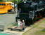
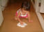

2001年7月22日 11時28分撮影
子供たちで、恒例の“またのぞき”。
「何が見えたー？」「海が見えたヨォー」2001年7月21日 15時46分撮影
海に飽きちゃったので次は砂浜で大はしゃぎ。2001年7月21日 15時32分撮影
日本海でひと泳ぎ。楽しいひととき！！ 大はしゃぎ。2001年7月21日 14時21分撮影
桃の収穫もひと段落。全部で１８４個をＧｅｔ！2001年7月21日 14時12分撮影
１番高いはしごもヘーキだよ。ママやパパは落っこちないかと
ヒヤヒヤしているのに、当の本人は悠々と大自然を満喫中！！2001年7月21日 13時22分撮影
桃の木畑をひとりでお散歩。
プーンと甘い香りがただよってきます。
2001年7月21日 10時50分撮影
加悦町道の駅近くの「ＳＬ広場」。
本物の機関車がいっぱい展示されています。
2001年7月15日 11時32分撮影
最近お手伝いが大好きです。食器洗い・洗濯干し・掃除機・・・
そして今日は、廊下を一生懸命拭き掃除。。。 ありがとう！2001年7月8日 9時7分撮影
ママがお仕事なので、パパとお留守番。。。シール遊び中！2001年6月23日 20時45分撮影
姪っ子たちと桜井名物の「夜店」に。。。当て物でもらいました。